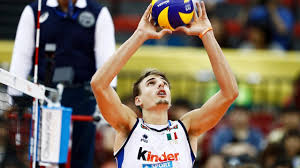
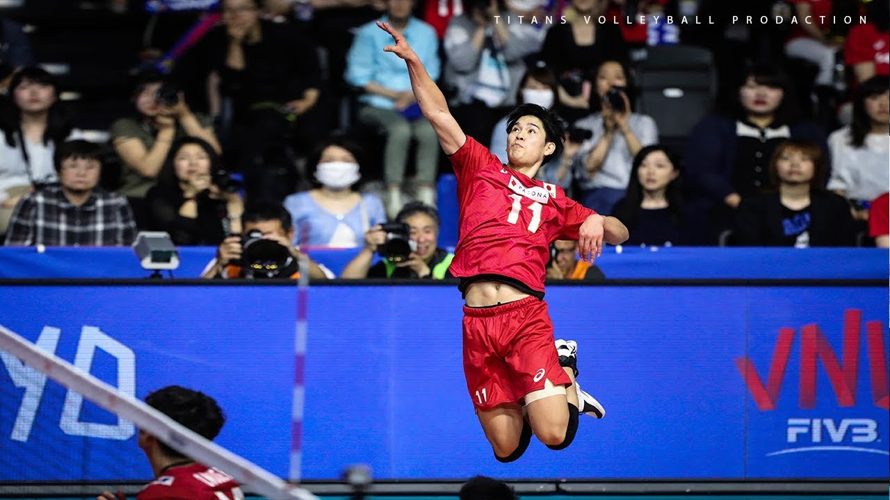
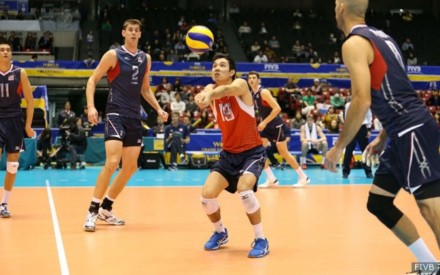

There are 5 main positions in volleyball, The setter, the left-wing spiker, the opposite spiker, the middle and the
libero. The setter is the control tower to the team. They get the most amout of contacts and set the spikers up for swings.
They are the most important position in the team and are positioned on the right side of the court. The next position is the left-wing spiker. The left-wing spiker are
positoned on the left side of the court in the front row and are usually right handed. They usually get the most hits and setters usually set highballs to them but that depends
on the skill level of the left-wing spikers. Next is the opposite spiker who are positioned on the right side of the court and are usually left handed. They also usually get highball sets from
the setter. Next is the middles. The middles are positioned in the center in the front row. They usally hit fast attacks which means that the setter
sets them lower balls. They are also the main blockers and have to run from the left side or the right side to try and block the ball. Finally the libero who wheres a different
coloured jersey then the other players. He wheres this because in a rotation, he doesn't rotate to the front row and stays in the back. Once he's about to switch to the front
row, he will be switched out for one of the middles. Usually a player can't be subbed in twice but the libero can be. A libero speciales in defense and only trains in defense. He cannot
spike or serve the ball.



.jpg)
